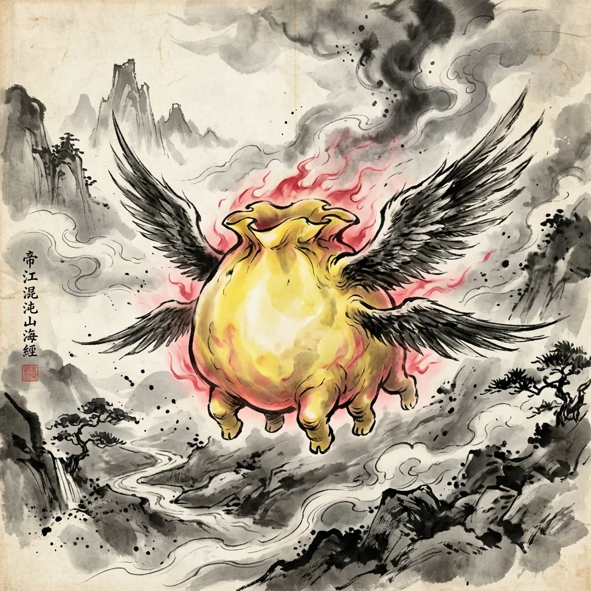
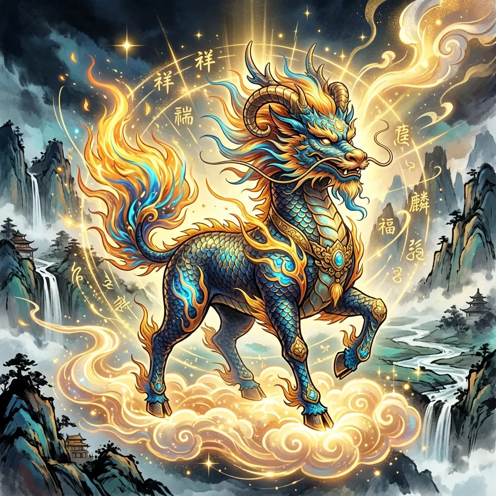

關於《山海經》
《山海經》是中國一部極具神秘色彩的先秦古籍，全書共十八篇，分為《山經》五篇和《海經》十三篇。它以地理空間為框架，記錄了遠古時代的地理、物產、神話、巫術、民俗及異獸。
書中描述了四百多個神怪異獸，牠們往往擁有奇特的外貌與超自然的力量。例如，有預示戰爭的「蜚」、象徵德行的「鳳凰」、以及帶來幸福的「九尾狐」。這些異獸不僅是遠古人民對未知自然力量的投射與敬畏，也是古代巫覡文化的縮影。
As a foundational text of Chinese mythology, the *Classic of Mountains and Seas* (Shan Hai Jing) blends early geography, cosmology, and folklore. It lists hundreds of sacred mountains, remote rivers, and mystical beasts, presenting a vivid canvas of how ancient peoples perceived the metaphysical forces of their environment.
「《山海經》，古之巫書也，紀神怪百物，涉地理史地，莫不神異。」
神話卷軸
《山海經》不僅記載了地理與山川，更保存了眾多膾炙人口的中國遠古神話。點擊下方卷軸閱讀傳說故事。
追日之志
夸父追日
夸父與日逐走，入日；渴，欲得飲，飲於河、渭；河、渭不足，北飲大澤。未至，道渴而死。棄其杖，化為鄧林。
填海之執
精衛填海
炎帝之少女，名曰女娃。女娃遊於東海，溺而不返，常銜西山之木石，以堙於東海。
補天之慈
女媧補天
往古之時，四極廢，九州裂，天不兼覆，地不周載。女媧煉五色石以補蒼天，斷鰲足以立四極。
射日之勇
后羿射日
堯時十日並出，焦禾稼，殺草木，而民無所食。羿上射九日，萬民皆喜。
治水之功
鯀禹治水
鯀竊帝之息壤以堙洪水，不待帝命。帝令祝融殺鯀於羽郊。鯀複生禹，帝乃命禹卒布土以定九州。
戰神之魂
刑天舞干戚
刑天與帝至此爭神，帝斷其首，葬之常羊之山。乃以乳為目，以臍為口，操干戚以舞。
涿鹿之戰
黃帝戰蚩尤
蚩尤作兵伐黃帝，黃帝乃令應龍攻之冀州之野。應龍畜水。蚩尤請風伯雨師，縱大風雨。
天塌地陷
共工觸山
昔者共工與顓頊爭為帝，怒而觸不周之山，天柱折，地維絕。天傾西北，地陷東南。
崑崙仙主
西王母傳說
西王母其狀如人，豹尾虎齒而善嘯，蓬髮戴勝，是司天之厲及五殘。
太陽之母
羲和浴日
東海之外，甘水之間，有羲和之國。有女子名曰羲和，方日浴於甘淵。羲和者，帝俊之妻，生十日。
月亮之母
常羲沐月
有女子方浴月。帝俊之妻常羲，生月十有二，此始浴之。
機巧異能
奇肱國飛車
奇肱之國在其北，其人一臂三目...能為飛車，從風遠行。
巫術藥草
靈山十巫
有靈山，十巫從此升降，百藥爰在。十巫者：巫咸、巫即、巫盼、巫彭、巫姑、巫真...
歸墟大壑
少昊與歸墟
東海之外大壑，少昊之國。少昊孺帝顓頊於此，棄其琴瑟。其琴瑟在歸墟。
移山之志
愚公移山
北山愚公者，年且九十，面山而居。帝感其誠，命夸娥氏二子負二山，一厝朔東，一厝雍南。
青丘祥瑞
九尾狐傳說
青丘之山，有獸焉，其狀如狐而九尾，其音如嬰兒，能食人，食之不蠱。
晝夜四季
鐘山神燭龍
鐘山之神，名曰燭陰，視為晝，瞑為夜，吹為冬，呼為夏，不飲，不食，不息...
貪婪無厭
貪婪之獸饕餮
鉤吾之山有獸焉，其狀如羊身人面，其目在腋下，虎齒人手，其音如嬰兒，名曰饕餮。
太平仁獸
盛世瑞獸麒麟
貃山有獸焉，其狀如麂而一角，其名曰麒麟，見則天下太平。
無序初元
渾沌無面目
天山有神焉，其狀如黃囊，赤如丹火，六足四翼，渾敦無面目，是識歌舞，實為帝江也。
禦凶避邪
天狗食月
陰山有獸焉，其狀如貍而白首，名曰天狗，其音如榴榴，可以禦凶。
木精火鳥
火神鳥畢方
畢方鳥在其東，青水東，其為鳥人面一足。見則其邑有訛火。
凶星降世
四大凶獸傳說
舜臣堯，賓於四門，流四凶族：混沌、窮奇、檮杌、饕餮，投諸四裔，以禦魑魅。
四宿星御
四大神獸（聖獸）傳說
天官五獸：左青龍、右白虎、前朱雀、後玄武，以正四方，以安天下。
盛世祥瑞
四大瑞獸傳說
麒麟、鳳凰、白澤、騶虞，現則天下太平、國泰民安，為世間至高福澤之象徵。
魅影妖祟
四大妖獸傳說
九尾妖狐、禍斗、蠱雕、相柳，或具幻惑魅心之術，或食火噴毒，為大自然野性之化身。
凶兆降臨
四大災獸傳說
蜚、肥遺、蠻蠻、猾褢，現身即伴隨著大疫、大旱、大水與戰爭兵災。
天地靈根
四大靈獸傳說
麟、鳳、龜、龍，謂之四靈。融合萬物精氣，為五行八卦與華夏圖騰之源起。
佈局 A：經典神話戰局 (Classic Layout)
一
混沌
二
窮奇
三
檮杌
四
饕餮

四大惡神：混沌
【混沌初開】每回合結束時，隨機降低玩家場上一張卡牌 20% 攻擊力。
東山經 (木)
南山經 (火)
西山經 (金)
北山經 (水)
中山經 (土)
玩家生命
100 / 100
靈力值
3 / 3
手牌區 (點擊手牌再點擊戰場插槽部署)
佈局 B：手機橫屏對決模擬器 (Landscape Layout)
戰場環境：山中
山海奇獸對決模式 · 橫屏
我方陣地 (Player Side)
【1】持有卡牌與生命
【2】我方英雄

軒轅黃帝
守護獸：麒麟
3 (東山經)
4 (南山經)
5 (西山經)
6 (北山經)
敵方陣地 (Enemy Side)
A (西山經)
B (北山經)
C (東山經)
D (南山經)
【E】敵方英雄
混沌
四大惡神
【F】敵方生命與卡牌
佈局 C：電腦版寬屏對決戰場 (Desktop Landscape)
戰場環境：山中
山海奇獸對決模式 · 電腦寬屏大視野
我方陣地 (Player Side)
【1】持有卡牌與生命
【2】我方英雄
軒轅黃帝
守護獸：麒麟
3 (東山經)
4 (南山經)
5 (西山經)
6 (北山經)
敵方陣地 (Enemy Side)
A (西山經)
B (北山經)
C (東山經)
D (南山經)
【E】敵方英雄
混沌
四大惡神
【F】敵方生命與卡牌
佈局 4：期末專案·手繪原子筆草圖版面 (Layout 4 - Hand-drawn Sketch)
前排·東
前排·西
後排·南
後排·北
我方角色
前排·木
前排·火
後排·金
後排·水
《山海經 · 奇獸對決》卡牌對戰說明
歡迎來到《山海經 · 奇獸對決》對戰玩法說明頁面！本遊戲是一個專為《山海經》設計的策略卡牌闖關對抗遊戲。玩家可以使用收集到的山海異獸卡牌，在「東、南、西、北、中」五大方位戰線上與混沌、窮奇、檮杌、饕餮等強大魔王進行對決。
1. 召喚與靈力限制
每張卡牌左上角標示的數字為其召喚靈力點數 (Cost)。玩家每回合擁有的靈力上限有限（第一回合為 3 點，隨回合推進逐次增加，最多為 8 點）。靈力會於每回合結束後自動補滿。合理分配召喚費用是致勝的關鍵！
2. 戰力 (ATK) 與生命值 (HP)
卡牌下方標示了兩個基礎戰鬥數值：
⚔️ 戰力 (ATK)：代表對決衝突時，能對敵方卡牌造成的傷害量。
❤️ 生命值 (HP)：代表卡牌能承受的傷害上限。當生命值降至 0 或以下時，該異獸隨從陣亡。
3. 屬性相剋機制
遊戲中的卡牌分為三大類型，形成循環剋制鏈。當攻擊剋制對手時，造成的傷害將提升 30%：
🟢 神獸 克 凶獸 🔴：神獸攻擊凶獸時，傷害提升 30%。
🔴 凶獸 克 瑞獸 🔵：凶獸攻擊瑞獸時，傷害提升 30%。
🔵 瑞獸 克 神獸 🟢：瑞獸攻擊神獸時，傷害提升 30%。
4. 五山經地域共鳴
將卡牌放置在符合其出身地域（經脈）的格子時，將激活特別共鳴效果：
🟢 東山經 (木)：獲得「再生」── 每回合結束時回復 15 點生命值。
🔴 南山經 (火)：獲得「烈焰」── 在對決時，戰力（ATK）加成 30%。
🟡 西山經 (金)：獲得「破甲」── 無視敵方防禦，對決傷害額外增加 20%。
🔵 北山經 (水)：獲得「冰結」── 攻擊前有 25% 機率凍結對手，被凍結者本回合無法還擊，造成的傷害降為 0。
🟤 中山經 (土)：獲得「萬能共鳴」── 中山經隨從卡牌在任何插槽皆可觸發該插槽的地域共鳴。
5. 卡牌特徵天賦
依據《山海經》原著的外貌與特徵描述，部分異獸具備獨特天賦：
⚡ 先手速攻（飛行鳥類）：在衝突中先手攻擊。若能一擊擊殺敵方，則敵方無法觸發反擊，達成無傷消滅。
🛡️ 堅壁嘲諷（物理巨獸）：卡牌血量較高，充當戰線防護肉盾。
👁️ 多眼洞悉（防止奇擊）：擁有防禦偵察天賦，使對方的奇襲與冰凍效果失效。
6. 百鳥爭鳴（群鳥陣營特效）
當己方或敵方場上同時部署了 3 隻（含）以上具有飛行特徵（先手⚡圖標）的鳥類卡牌 時，會自動觸發「百鳥爭鳴」。此陣營效果將干擾對手的精神，使對手場上所有隨從卡牌的戰力（ATK）降低 20%！
7. 天地五行齊聚（大共鳴）
當玩家與敵方場上（共 8 個格子）同時部署了涵蓋東、南、西、北、中五種地域出身的隨從卡牌時，在回合開始結算前會自動發動「五行大共鳴」。天地之氣交泰，將直接對敵方魔王造成 30 點真實傷害，並為我方回復 20 點生命值，是逆轉戰局的核心王牌！
筆者說明 (Author's Notes)
🔮 關於這個專案的誕生與創作動機
本專案起源於筆者（胖子叔叔）對中國古代神話與地理奇書《山海經》的深厚喜愛。書中光怪陸離的珍禽異獸、雄渾神秘的創世神話，無一不展現了華夏遠古先民天馬行空的想像力。
為了在這個現代數位時代重現那股古老而神聖的野性美學，筆者特別設計並建立了這個互動式網頁。我們將傳統的天體羅盤（八卦方位篩選）與現代的漸進式Web應用 (PWA)技術相結合，讓讀者無論是在電腦前還是手機螢幕上，都能如翻閱古籍般流暢地探索各方異獸與神話傳說。
🤖 人工智慧 (AI) 代理人協同創作
特別值得一提的是，本專案的程式開發、神話故事編寫以及部分水墨風格異獸插圖的生成，均是由筆者與 Google DeepMind 研發的 Gemini AI 代理人 (AI Agent) 以人機協同（Pair Programming）的方式探索、構思並編寫完成的。這是一次極具實驗性的 AI 代理人開發測試，旨在探究生成式 AI 在歷史文化推廣、視覺美學重塑與軟體工程實踐中的潛能。希望透過這次的數位嘗試，能讓更多人體會到《山海經》神話體系的無窮魅力。
⚖️ 版權與授權說明 (Copyright & Disclaimer)
1. 美術資產：網頁中使用的水墨風格異獸插圖、精美背景與UI框架均為專案專屬 AI 繪圖生成，版權歸屬本專案所有。僅供個人學習與非商業性質推廣展示使用。
2. 古籍文字：經典古籍原文均引自先秦著作《山海經》及漢代《淮南子》、《列子》等經典史料，文字版權屬於公有領域（Public Domain）。
3. 故事釋義：現代神話故事解說由 AI 代理人整合經典古文編纂而成，版權歸屬本專案，歡迎在保留來源出處的前提下轉載分享。
「古老的志怪，透過現代人工智慧的經脈，在網頁的字裡行間重獲新生。」
東山經
神獸
九尾狐
Nine-Tailed Fox靈性數值 (Spiritual Stats)
古籍記載 (Original Classic Text)
「青丘之山，有獸焉，其狀如狐而九尾，其音如嬰兒，能食人，食之不蠱。」
現代釋義 (Modern Interpretation)
九尾狐是中國古代神話傳說中的奇獸。居住在青丘國，長著九條尾巴，聲音如同嬰兒啼哭。雖然傳說牠會食人，但人們若吃了牠的肉，便能避開妖邪蠱惑。在後世中，牠逐漸演化為瑞祥之獸，象徵子孫昌盛與帝王之兆。